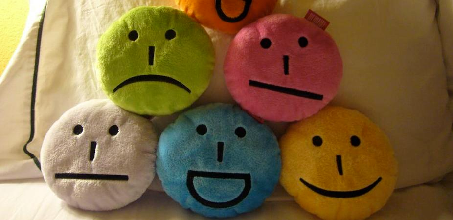

In general I really benefit from pairing with others to solve problems in always varying and different ways individuals with different insights. Getting a slightly different perspective on solving the challenge and addressing code and these differences in turn gives me an opportunity to be flexible.Making my own approach to seeing things differently and accumulation of whatever information more quickly when it comes to problem-solving and addressing these challenges in particular.What I'm finding particularly fun and rewarding is being able to share in frustrations or opportunities for growth and knowing that other people experience similar opportunities as well. It's fun being able to arrive at the same destination with a driver and navigator from such different technical and cultural backgrounds. I really like it when I can learn something unexpected from someone and share a tidbit in return. Maybe is something I just learned from last session!
It's really beneficial going both ways in the learning process and even if we share specific information from a reference a book, chapter, and page.When I'm not particularly strong on the subject matter I found it frustrating to even reach out for help and especially wanting to pair with someone to show my vulnerability again in the subject matter itself, looking back now I wish I had actually done pairing even more as I think a little bit more would greatly benefited and gone exponentially further. In fact this reflects in others feedback; that I do not think as highly of my ideas as I should or speak confidently. I hope that every pairing session finds me growing out of it and after doing the initial self census of self consciousness I do feel encouraged to read my feedback. Reading and giving has been positive and patterns to be improved upon are consistently areas of self-assertion. As it does also reflects lack of expertise, assumes a lack of technical expertise which I guess at this station and stage of the game is still generally acceptable or at least common the feedback that I read . It's been helpful in my learning growing my approach to not be so hesitant about my ideas for input and general perspective.
Session feedback is practical to working concert with peers so in the moment and with the element of dynamism, so both the driver and the navigator can reach that uniquely agreeable destination.The most difficult things about reading and writing feedback is the actionable information especially if the pair was generally the stronger element . Generally positive and knowledgeable it's hard to do sometimes specifically assert a suggestion for improvement difficult unless the pair is extremely inconsiderate or unwilling to communicate it's hard to come up with actionable constructive criticism in every context. Learned and grown to love peering in reaching out for help in general it's taken me a long time to get to this point it's made me go out of my comfort zone with a lot of things that were difficult to do and I love those areas. Looking forward to acheiving more througfh pairing patterns it's such a good way to look back , to correct now, and "pre-pair" for the future.